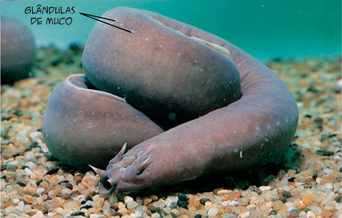

Peixe Bruxa
um vertebrado sem vertebra
Estão presentes na Terra a mais de 400 milhões de anos, myxne, também conhecido como peixe-bruxa, contem mecanismo muito simples e ausência de membros e órgãos que seriam vitais para qualquer ser vivo.
Levando isso em conta, seria impossível um organismo desse tipo continuar a sua existência, portanto é porque dessa ausência que o torna a espécie impressionante e muito valioso para a humanidade e ainda continua estável, mesmo com a intensa caça e a poluição.

Tá bom, mas o que esse animal tem de importância para a humanidade e qual a relação dela com o campo científico?
O peixe-bruxa contém em todo o seu corpo mais de 100 glândulas que liberam, quando ameaçado, um muco denso e pegajoso para se proteger e para se alimentar também da carcaça, nesse muco também contem agentes imunológicos agem de maneira imediata contra os patógenos.
Ao saber disso, os cientistas tentam extrair esses agentes e as proteínas a fim de gerarem antibióticos para combaterem os agentes mortais.
 O muco do peixe-bruxa se solidifica quando tirada da água, se transformando em uma matéria maleável, resistente e sólida, podendo ser usado para fazer roupas esportivas, sendo um ótimo substituto para o poliéster(derivado do petróleo, fonte não renovável), portanto ele ainda não encontraram uma forma de sintetizar(criar dentro do laboratório uma substância orgânica semelhante), para não depender muito do animal e ainda não conseguiram fazer procriações nos cativeiros, mas quando conseguirem, todos nós utilizaremos essas roupas.
O muco do peixe-bruxa se solidifica quando tirada da água, se transformando em uma matéria maleável, resistente e sólida, podendo ser usado para fazer roupas esportivas, sendo um ótimo substituto para o poliéster(derivado do petróleo, fonte não renovável), portanto ele ainda não encontraram uma forma de sintetizar(criar dentro do laboratório uma substância orgânica semelhante), para não depender muito do animal e ainda não conseguiram fazer procriações nos cativeiros, mas quando conseguirem, todos nós utilizaremos essas roupas.